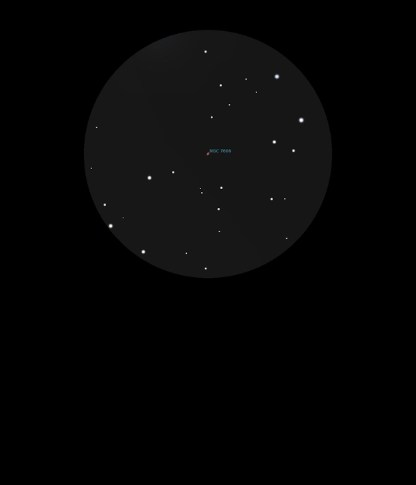

NGC 7606
Spiral Galaxy in Aquarius
NGC 7606
Mag 10.8
08/09/16
Now well after midnight and very dark which is just as well
since NGC 7606 at Mag 10.8 is difficult to see
Faint elongated smudge in 12mm but quite easy to locate by
star hopping from ψ1 Aqr, ψ1
Aquarii, 91
Aquarii, HIP 114855 which at Mag 4.20 is the brightest of a
triple star system with ψ² Aqr at Mag 4.40 and ψ³ Aqr at Mag
4.95, all just outside the FOV in 25mm